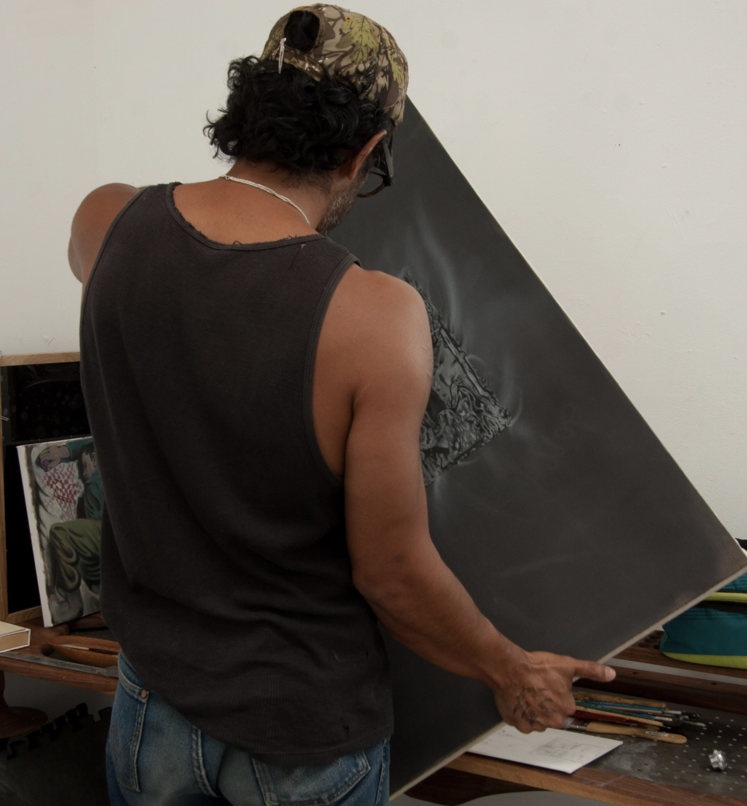
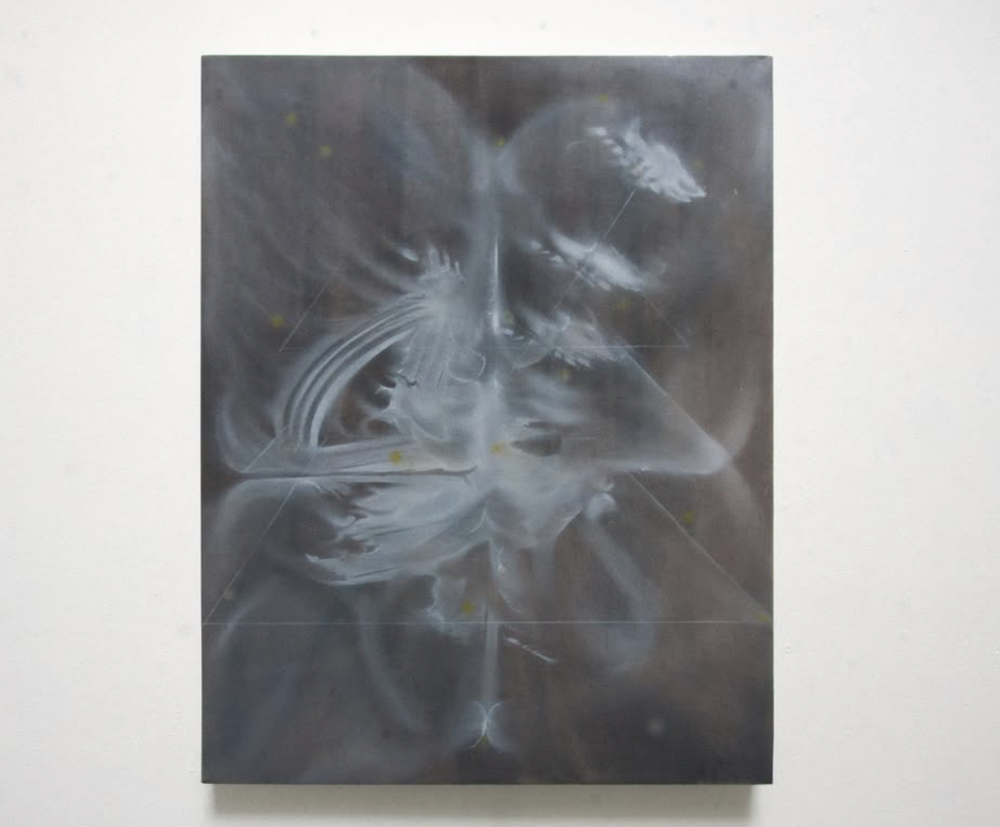
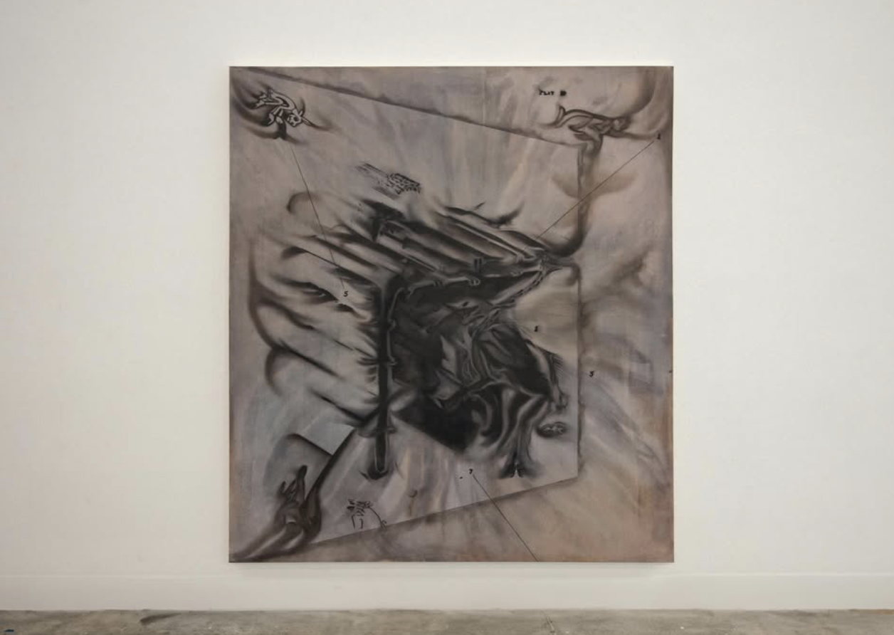
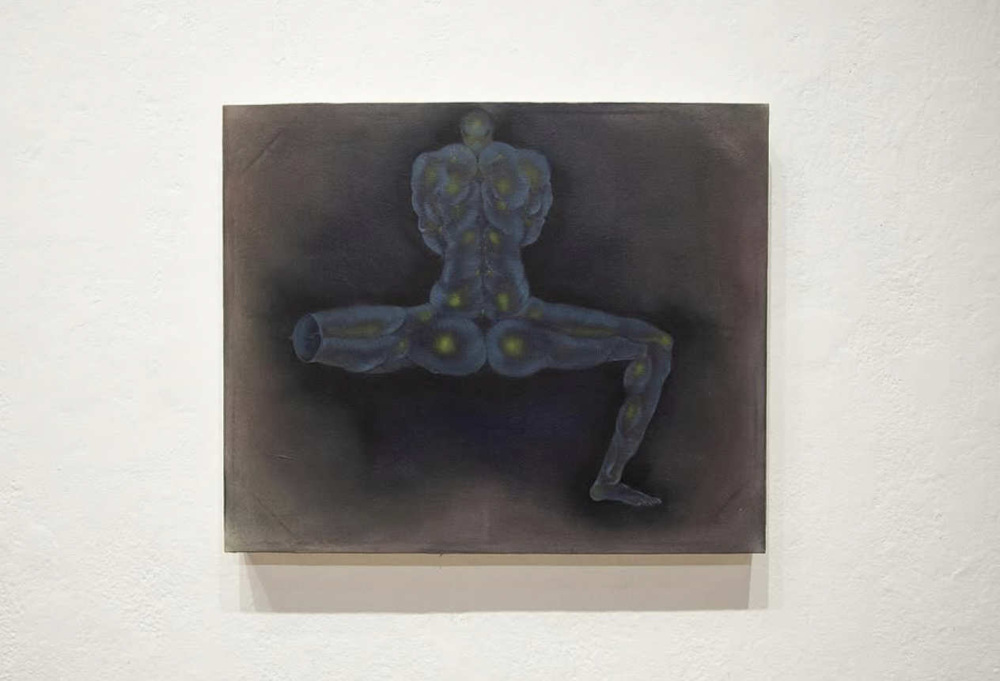
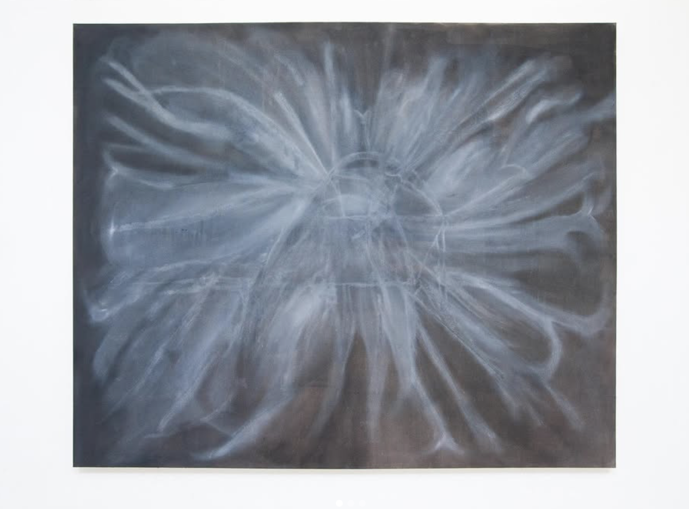
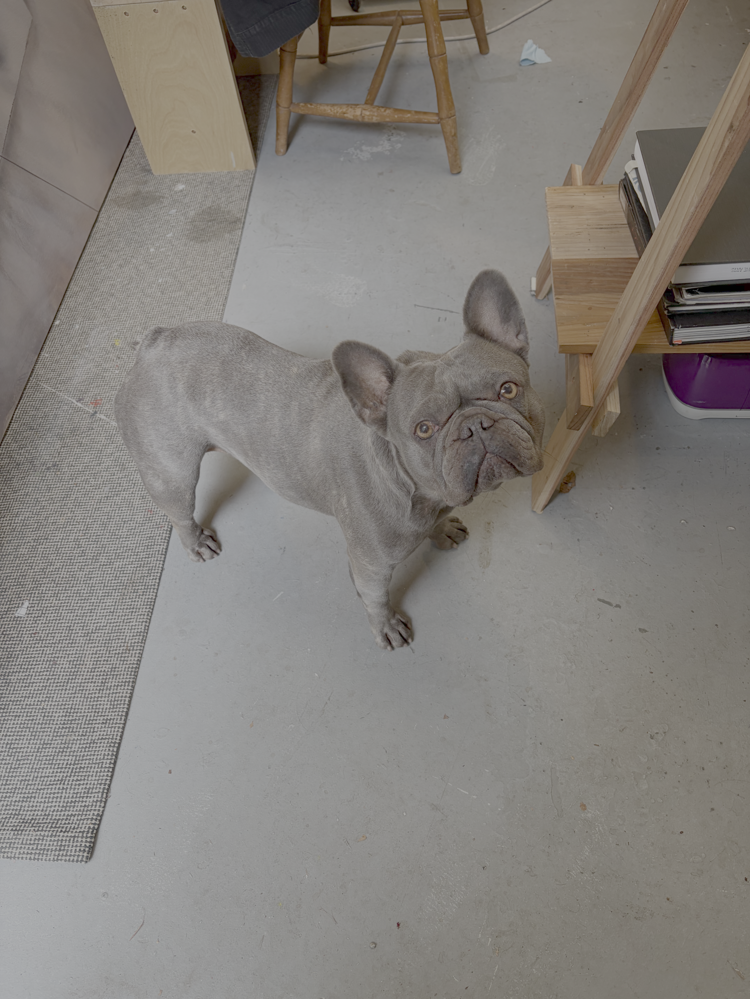

INTERVIEW: Erwinson Lemus Ayala:
‘I’ve been in LA for such a long time. Whether I think about it or not I think being here it has a huge influence on my work.’
Erwinson Lemus Ayala is a second-year graduate student at CalArts, where he is pursuing his MFA in painting. With his final thesis exhibition on the horizon this spring, he is deep in the work of bringing his ideas together, and the studio is where most of that happens.
I recently caught up with him there, surrounded by canvases, works in progress, and the quiet rhythm of a practice in motion. It was a chance to step away from the finished pieces and get a sense of the person behind them.
We talked about where it all began, what keeps him going, and a few of the things that make his space feel like his own.

Nick: Let’s start at the beginning. Tell me about where you’re from and how you got into painting.
Erwinson: I think so. I have some early memories of painting stuff in 1st grade. Animals and bugs. Random stuff. I also drew a lot. I would give my drawings away to friends.
Nick: You’re an LA native, correct? Do you feel that being here inspires the work you create?
Erwinson: kind of. I was born in Guatemala but took my first steps in the US in East LA. I've been in LA for such a long time. Whether I think about it or not I think being here it has a huge influence on my work.

Nick: Was there a moment when you decided to fully commit to art?
Erwinson: I remember telling myself a few years ago that before I turn 40 I want to have my mfa.
Nick: How has your work evolved since attending CalArts, and what currently motivates you to keep painting?
Erwinson: After undergrad I remember telling myself I was done with school. And I wanted to forget everything I learned and develop my own style outside any academic framework. That was over a decade ago now. I think I worked. Nothing I make now looks anywhere close to what I was doing in undergraduate. And now nothing I'm making looks anywhere close to what I was doing last year. I think since being here I've learned to notice how I think and the choices I make.

Nick: Are there specific things or moments that have directly influenced your style?
Erwinson: It's hard to name a specific moment. I think just being here at calarts and staying open to new things. Not closing myself off. Outside my comfort zone.

Nick: What are your plans or goals after graduation?
Erwinson: Keep making work. Hopefully get into an artist residency.
Nick:And who is the furry friend that’s always watching your back while you paint?
Erwinson: That's Bacchus, she's the one that tells me what colors to use.
